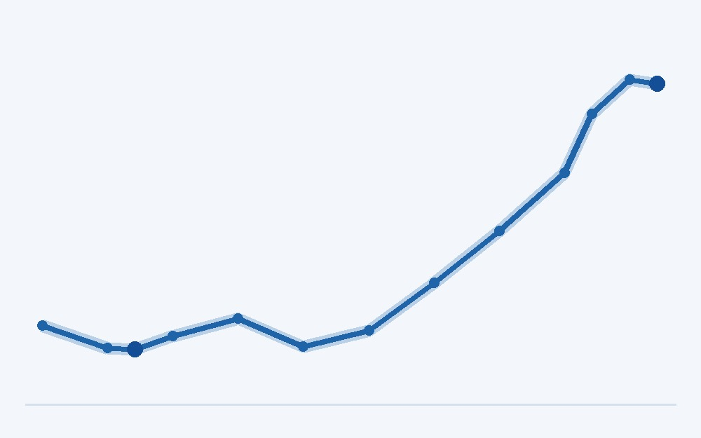
firstkernel
2026
A fused mixture-of-experts layer for vLLM on an H100. Coding agents took it from five GPU launches to two. The layer was 22% faster at prefill. The engine was 12%.

2026
A fused mixture-of-experts layer for vLLM on an H100. Coding agents took it from five GPU launches to two. The layer was 22% faster at prefill. The engine was 12%.
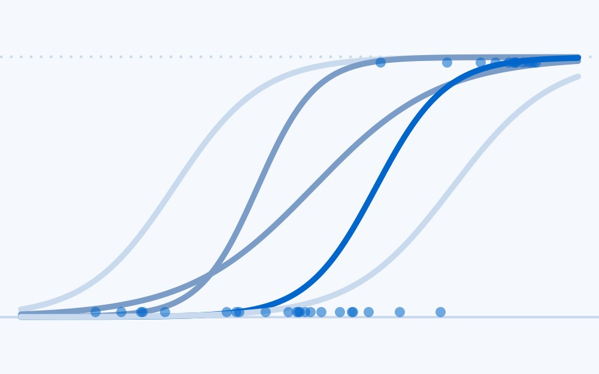
Stanford AIMS Lab, 2026
A PyTorch toolkit that treats AI evaluation as a prediction problem. It fits latent-variable models such as item response theory to sparse benchmark results and predicts how a model will do on tasks it hasn't been tested on.
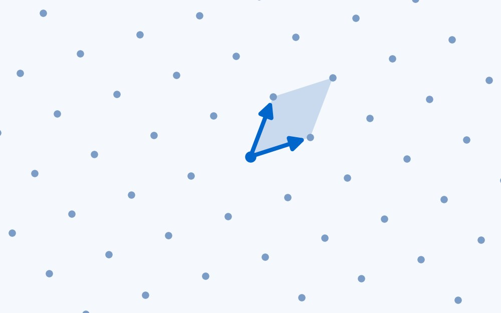
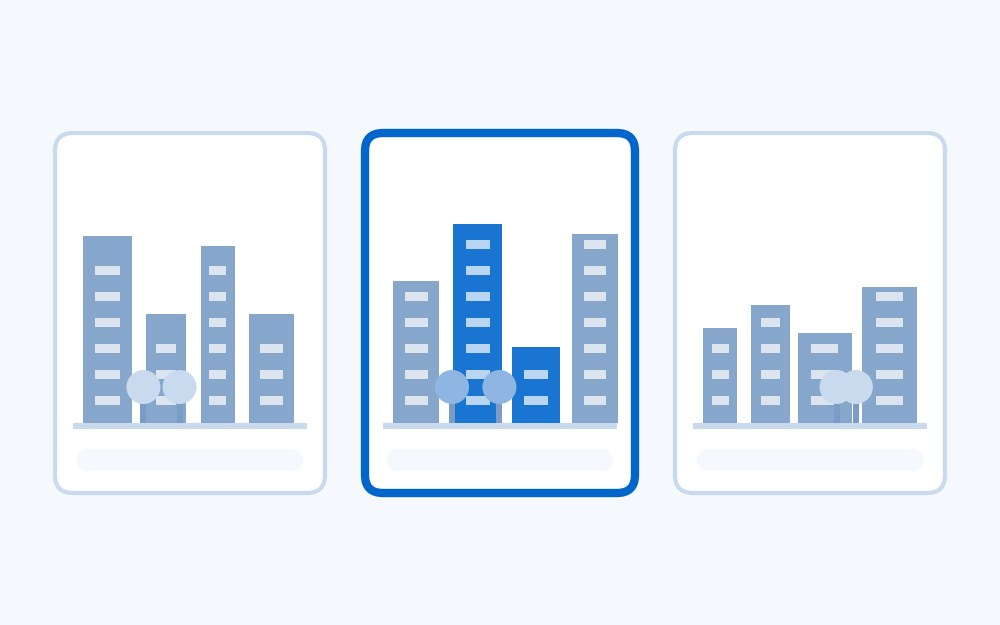
Google Summer of Code 2024 · City of Boston
A web app that lets residents take part in city planning. They generate designs for bus stops, plazas and other parts of the city from a prompt, edit them, and send the ones they like to planners.

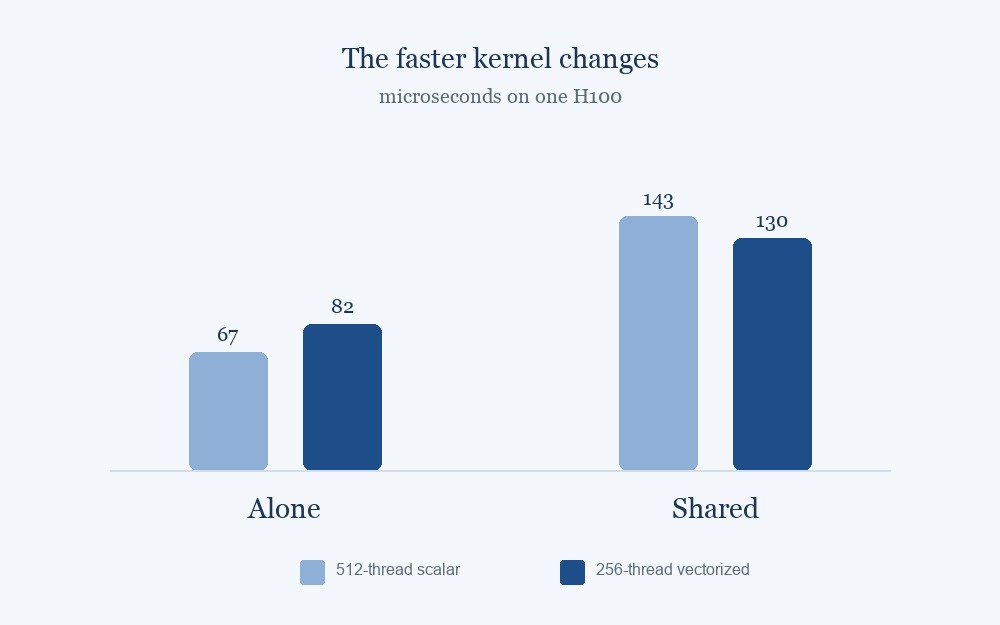
Sherlock, 2026
Two agent-written GPU kernels for the same problem swapped rank on an H100 once a neighbor held half the register file. A 24% lead became a 10% loss.
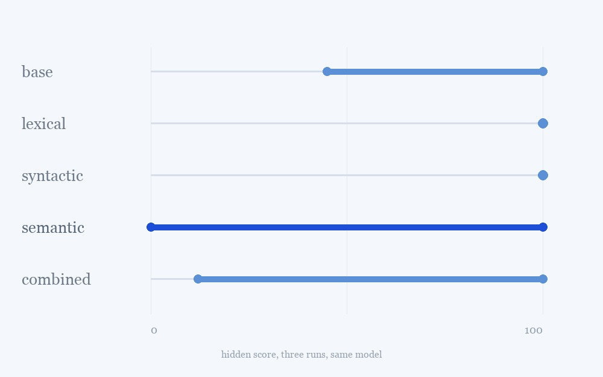
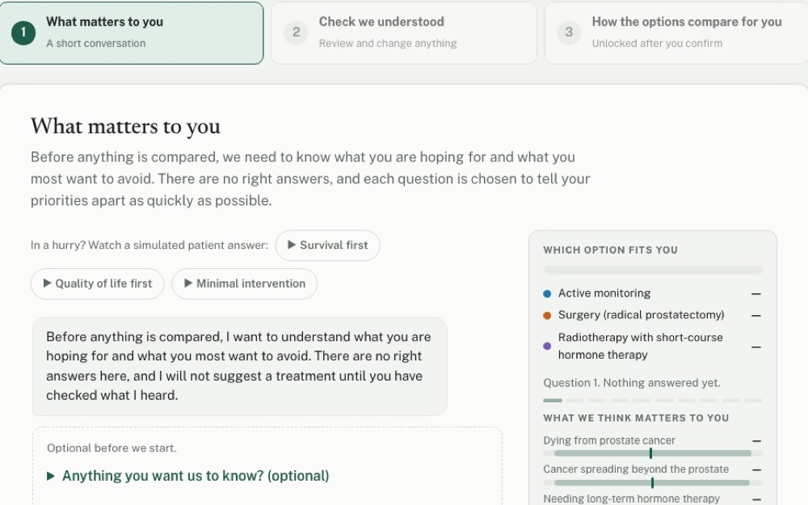
2026
A decision aid for a visit where more than one treatment is reasonable. You can edit the description and the options, or start from a handout your doctor gave you. Prostate cancer, knee arthritis, and appendicitis are ready to open.
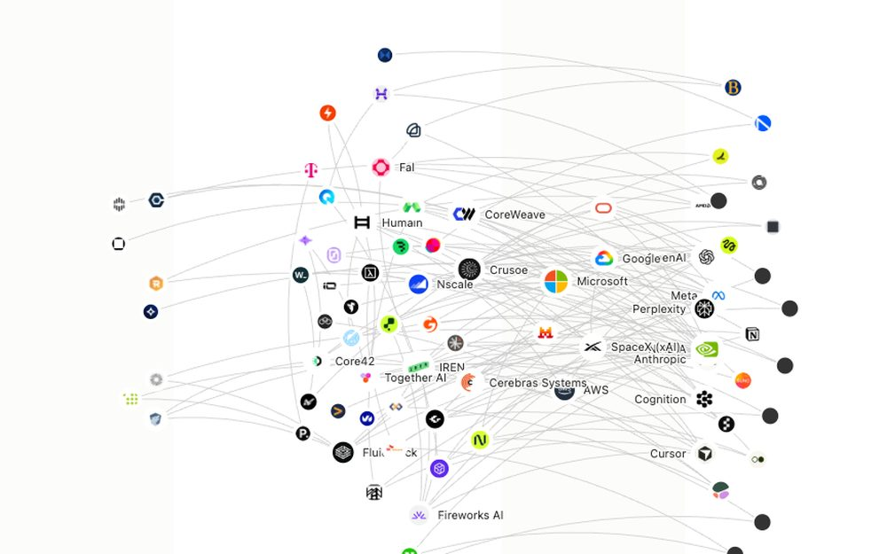
2026
A guide to the companies that rent GPUs and other AI accelerators, with a map of who supplies whom, a timeline, current H100 prices and profiles of 97 providers.
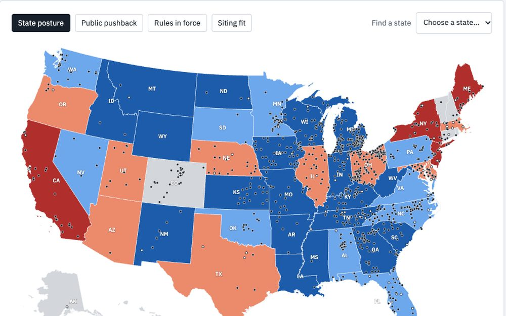
2026
A map of how each state treats datacenter development in 2026, with local moratoriums, public pushback and a siting model that ranks states for new projects.
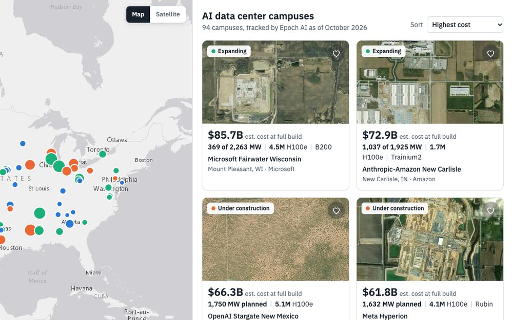
2026
A listings site for AI data centers, laid out like a real estate search, with 94 frontier campuses and 30 signed AI leases priced as rent per kW a month.

2026
An interactive model that asks whether AI revenue can pay for the AI buildout, starting from OpenAI and Anthropic revenue forecasts through 2030.
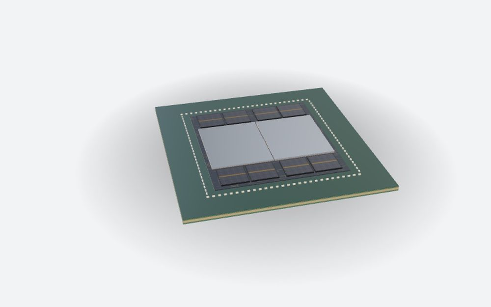
2026
A 3D teardown of the NVIDIA B200 that traces its components to the firms, countries and materials they depend on.
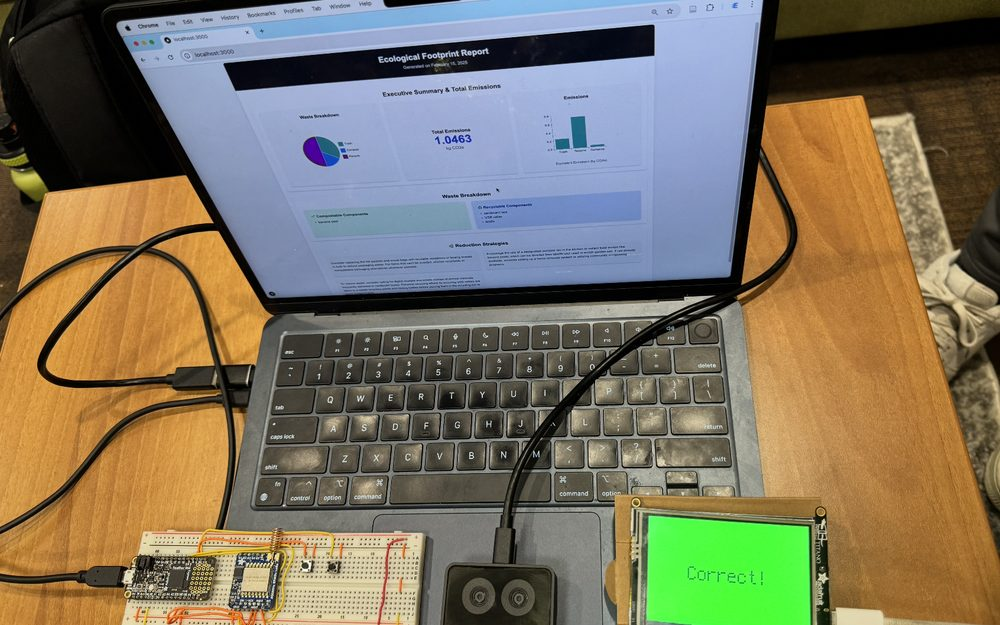
Stanford Student Robotics, 2024
Scaling conservation data for an endangered species with autonomous drones.
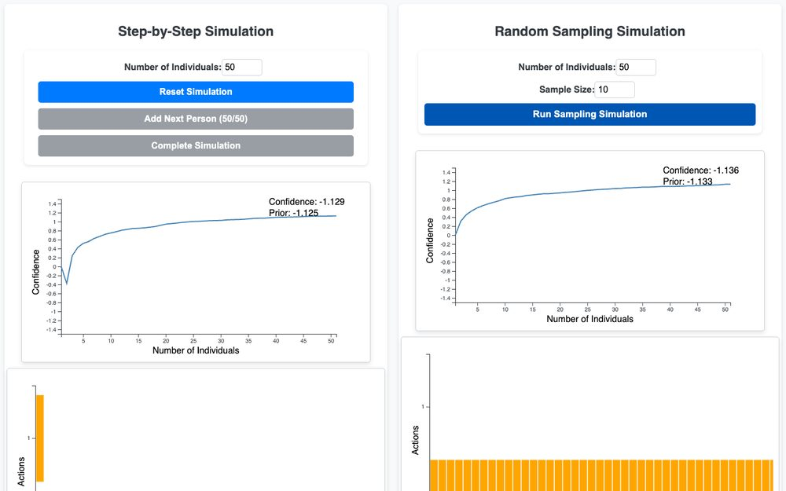
CS 109, Stanford, 2024
An interactive simulation of how people update their beliefs from private information and the choices of others.